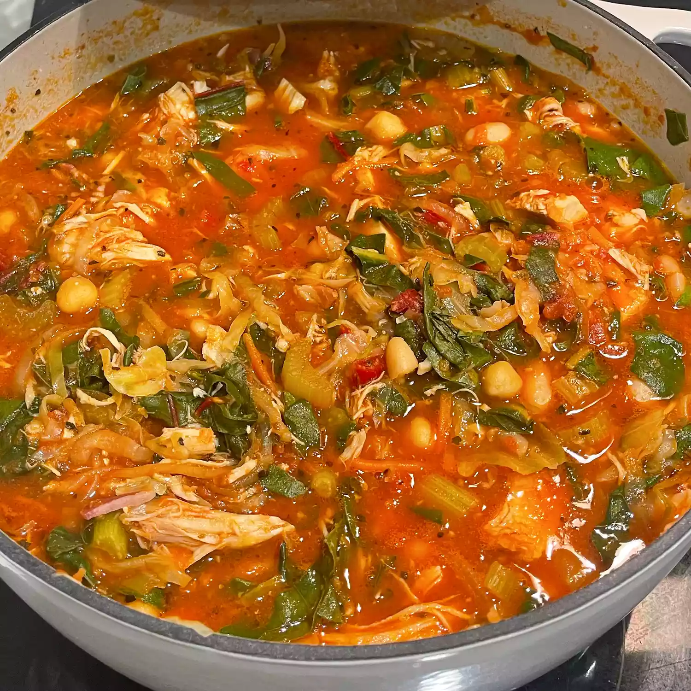

Minestrone Soup

Ingredients
- 2 tablespoons olive oil
- 3 ounces chopped pancetta
- 1 onion, diced
- 1 cup diced celery
- 4 cloves garlic, minced
- 4 cups chicken broth
- 2 cups water, plus more as needed
- 1 (28 ounce) can plum tomatoes, crushed fine
- 1 cup cranberry beans, shelled
- 2 cups chopped cabbage, or more to taste
- 1 (15 ounce) can garbanzo beans, drained
- 1 teaspoon red pepper flakes, or to taste
- 1 teaspoon Italian seasoning
- 2 teaspoons salt
- 1 bunch Swiss chard, chopped
- ⅔ cup ditalini pasta
- salt and ground black pepper
- ¼ cup extra virgin olive oil, for drizzling
- ¼ cup finely grated Parmigiano-Reggiano cheese
- ¼ cup chopped fresh Italian flat-leaf parsley
Directions
- Heat 2 tablespoons olive oil in large stock pot over medium-high heat. Add pancetta; cook and stir until it begins to brown, 2 to 3 minutes. Stir in onions and celery; cook and stir until onions start to turn translucent, about 3 minutes. Stir in minced garlic and cook for another minute.
- Pour chicken broth, water, and plum tomatoes into the pancetta and onion mixture. Bring to a simmer.
- Stir cranberry beans, cabbage, garbanzo beans, red pepper flakes, Italian seasoning, and 2 teaspoons salt into broth mixture. Bring to a simmer and cook until cranberry beans are tender, adding more water as needed if the soup becomes too thick, about 45 minutes.
- Stir in Swiss chard and simmer until softened, about 15 minutes. Season with salt and black pepper to taste.
- Stir in pasta and increase heat to medium-high and simmer until pasta is tender, about 15 minutes. Ladle into bowls and top with extra virgin olive oil, Parmigiano-Reggiano cheese, and Italian parsley.